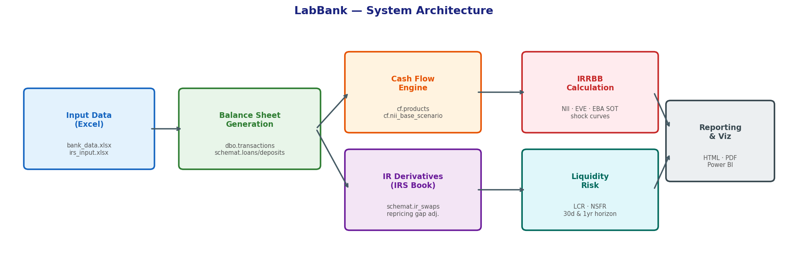

This guide gets you running in one of two ways: exploring the shipped demo bank in LabBank with nothing but Python, or standing up the full SQL-Server-backed pipeline so you can generate and explore your own balance sheet. Pick the path that matches what you want to do — you can always start with Path A and move to Path B later.
Practitioners, risk/ALM analysts, and students who want to see a complete ALM pipeline — from synthetic transaction generation through NII/EVE/EBA SOT/LCR/NSFR — and interact with the results rather than just read about them.

Use this if you want to explore the ALM concepts and stress a pre-built balance sheet interactively. Nothing here touches SQL Server.
Prerequisites: Python 3.10 or later.
git clone <this-repo-url>
cd bank_project
python -m venv venv
Activate the environment:
# Windows (PowerShell)
.\venv\Scripts\Activate.ps1
# macOS/Linux
source venv/bin/activate
Install and run:
pip install -r requirements.txt
streamlit run sandbox/app.py
Streamlit opens a browser tab at http://localhost:8501. You'll see six tabs: Balance Sheet, IRS Book, NMD Stress, Metrics, Gap Analysis, and Market Curves. Everything is computed from files already checked into the repo (optimize_prep/output/*.npz, balance_generate/input_data/bank_data.xlsx, and a few supporting Excel files) — no database, no credentials, no orchestration engine involved.
What to try first: open the Balance Sheet tab, change a percentage in the "✏️ New %" column (both Assets and Liabilities+Equity must each sum to 100%), then check the Metrics tab to see how NII, EVE, and the EBA Supervisory Outlier Test respond.
| Symptom | Likely cause / fix |
|---|---|
ModuleNotFoundError on streamlit run |
The venv isn't activated, or pip install didn't finish — re-run the two commands above. |
| Port 8501 already in use | Another Streamlit app is running. Run streamlit run sandbox/app.py --server.port 8502 instead. |
| Charts look stale after editing files | Click "🔄 Reload my data" in the sidebar — the app caches loaded data and doesn't watch the filesystem for changes. |
Use this if you want to build a balance sheet from your own numbers rather than stress the shipped demo one. This path uses SQL Server as the integration/audit layer — every intermediate step (transactions, cash flows, IRRBB results) lands in a real database you can query directly, which is deliberate: being able to run your own SELECTs and aggregations against the data is part of the point, not just a means to an end.
Any edition works — SQL Server Developer Edition is free and full-featured, or use SQL Server Express for a lighter footprint. You also need the ODBC Driver 17 for SQL Server (or adjust the driver string in step 3 if you install a different version).
Create an empty database named bank_gen (any tool works — SSMS, Azure Data Studio, or sqlcmd):
CREATE DATABASE bank_gen;
You do not need to create tables or schemas manually — each module creates its own schema and tables the first time it runs (see sql_setup.py → reset_data(mode=0) in each module).
Every module has its own python_code/sql_setup.py with a hardcoded connection string:
engine = create_engine(
"mssql+pyodbc://maciek_d/bank_gen"
"?driver=ODBC+Driver+17+for+SQL+Server"
"&Trusted_Connection=yes",
...
)
Replace maciek_d with your own SQL Server instance name (e.g. localhost, localhost\SQLEXPRESS, or a named instance) in all seven copies of this file:
balance_generate/python_code/sql_setup.pybalance_gen_add_data/python_code/sql_setup.pycash_flow_calc/python_code/sql_setup.pyir_derivatives/python_code/sql_setup.pyirrbb_calc/python_code/sql_setup.pyliq_calc/python_code/sql_setup.pyoptimize_prep/python_code/sql_setup.py(Yes, this is duplicated seven times rather than centralized — see the technical notes doc if you want to fix that instead of just editing all seven.)
The connection uses Windows Trusted Authentication by default (no password stored anywhere). If your SQL Server uses SQL authentication instead, change Trusted_Connection=yes to UID=...;PWD=... in each file — don't commit real credentials if you do this in a shared repo.
dagster dev
Open the Dagster UI (usually http://localhost:3000) and launch a job:
| Job | When to use it |
|---|---|
balance_sheet_job |
First run, or whenever you only need to regenerate the balance sheet + IRS positions. |
full_run_job |
Full pipeline: balance sheet → cash flows → IRRBB → liquidity. |
labbank_data_job |
Use this one for the "generate your own balance sheet" loop below — runs everything full_run_job does, plus rebuilds the npz tensors LabBank reads. |
irs_update_job |
Swap book changed, balance sheet didn't. |
irrbb_recalc_job |
Market curves changed, balance sheet and cash flows didn't. |
liq_only_job |
Refresh LCR/NSFR only. |
Since the goal here is getting to LabBank, labbank_data_job is the only one you need for the loop below — the others are fine-grained shortcuts for narrower changes (see README.md's full jobs table, which also lists optimize_prep_job for rebuilding LabBank's tensors on their own).
balance_generate/input_data/bank_data.xlsx with your own product balances, rates, and currencies. For swaps, edit ir_derivatives/input/irs_input.xlsx. If you're changing which products exist (not just their weights), also check balance_generate/input_data/interest_rt.xlsx — that's where each product's rate coefficients (a, b) and its client_floor/client_cap live (see the methodology doc's "Rate floors and caps" section); a new product with no row there gets no floor/cap at all.labbank_data_job in Dagster.streamlit run sandbox/app.py, or if it's already running, just refresh) and click "🔄 Reload my data" in the sidebar.Repeat steps 1–3 as many times as you like; SQL Server stays up the whole time.
Each stage can also be run as a standalone script, in this order:
python balance_generate/python_code/b_s_gen_workflow.py
python balance_gen_add_data/python_code/b_s_add_data_workflow.py
python cash_flow_calc/python_code/cf_calc_workflow.py
python ir_derivatives/python_code/irs_workflow.py
python irrbb_calc/python_code/nii_calc_workflow.py
python irrbb_calc/python_code/eve_calc_workflow.py
python irrbb_calc/python_code/eba_sot_workflow.py
python liq_calc/python_code/lcr_nsfr_workflow.py
python optimize_prep/python_code/opt_prep_workflow.py
Dagster is recommended over this because it enforces dependency order and keeps a run history — but the scripts work fine standalone if you'd rather not run Dagster at all.
| Symptom | Likely cause / fix |
|---|---|
pyodbc.InterfaceError / driver not found |
The ODBC Driver 17 isn't installed, or you have a different version — check installed drivers (odbcinst -j on Linux/Mac, ODBC Data Source Administrator on Windows) and update the driver= string in all 7 sql_setup.py files to match. |
| Login failed / trusted connection error | Trusted_Connection=yes uses your current Windows login. If SQL Server runs under a different account or on a different machine, you'll need SQL authentication instead (see step 2). |
IF NOT EXISTS ... CREATE SCHEMA errors on first run |
Confirm the bank_gen database exists and your login has db_owner (or at least CREATE SCHEMA/CREATE TABLE) permission on it. |
LabBank still shows the old balance sheet after labbank_data_job |
Click "🔄 Reload my data" — the app doesn't auto-detect file changes on disk. |